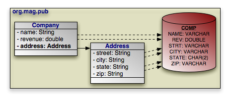

2.13.8.3. Embedded Mapping
Metadata describes JPA’s concept of embeddable objects. The field values of embedded objects are stored as part of the owning record, rather than as a separate database record. Thus, instead of mapping a relation to an embeddable object as a foreign key, you map all the fields of the embeddable instance to columns in the owning field’s table.

JPA defaults the embedded column names and descriptions to those of the embeddable class' field mappings.
The AttributeOverride annotation overrides a basic embedded mapping.
This annotation has the following properties:
-
String name: The name of the embedded class' field being mapped to this class' table. -
Column column: The column defining the mapping of the embedded class' field to this class' table.
The corresponding XML element is attribute-override.
It has a single name attribute to name the field being overridden, and a single column child element.
To declare multiple overrides, use the AttributeOverrides annotation, whose value is an array of AttributeOverride s.
In XML, simply list multiple attribute-override elements in succession.
To override a many to one or one to one relationship, use the AssociationOverride annotation in place of AttributeOverride. AssociationOverride has the following properties:
-
String name: The name of the embedded class' field being mapped to this class' table. -
JoinColumn[] joinColumns: The foreign key columns joining to the related record.
The corresponding XML element is association-override.
It has a single name attribute to name the field being overridden, and one or more join-column child elements.
To declare multiple relation overrides, use the AssociationOverrides annotation, whose value is an array of AssociationOverride s.
In XML, simply list multiple
association-override elements in succession.
In this example, Company overrides the default mapping of Address.street and Address.city.
All other embedded mappings are taken from the Address embeddable class.
package org.mag.pub;
@Entity
@Table(name="COMP")
public class Company {
@Embedded
@AttributeOverrides({
@AttributeOverride(name="street", column=@Column(name="STRT")),
@AttributeOverride(name="city", column=@Column(name="ACITY"))
})
private Address address;
...
}
@Entity
@Table(name="AUTH")
public class Author {
// use all defaults from Address class mappings
private Address address;
...
}
@Embeddable
public class Address {
private String street;
private String city;
@Column(columnDefinition="CHAR(2)")
private String state;
private String zip;
}The same metadata expressed in XML:
<entity class="org.mag.pub.Company">
<table name="COMP"/>
<attributes>
...
<embedded name="address">
<attribute-override name="street">
<column name="STRT"/>
</attribute-override>
<attribute-override name="city">
<column name="ACITY"/>
</attribute-override>
</embedded>
</attributes>
</entity>
<entity class="org.mag.pub.Author">
<table name="AUTH"/>
<attributes>
<embedded name="address">
<!-- use all defaults from Address -->
</embedded>
</attributes>
</entity>
<embeddable class="org.mag.pub.Address">
<attributes>
<basic name="street"/>
<basic name="city"/>
<basic name="state">
<column column-definition="CHAR(2)"/>
</basic>
<basic name="zip"/>
</attributes>
</embeddable>You can also use attribute overrides on an entity class to override mappings defined by its mapped superclass or table-per-class superclass.
The example below re-maps the Document.version field to the Contract table’s CVERSION column.
@MappedSuperclass
public abstract class Document {
@Column(name="VERS")
@Version private int version;
...
}
@Entity
@Table(schema="CNTRCT")
@Inheritance(strategy=InheritanceType.JOINED)
@DiscriminatorColumn(name="CTYPE")
@AttributeOverride(name="version", column=@Column(name="CVERSION"))
public class Contract
extends Document {
...
}The same metadata expressed in XML form:
<mapped-superclass class="org.mag.subcribe.Document">
<attributes>
<version name="version">
<column name="VERS">
</version>
...
</attributes>
</mapped-superclass>
<entity class="org.mag.subcribe.Contract">
<table schema="CNTRCT"/>
<inheritance strategy="JOINED"/>
<discriminator-column name="CTYPE"/>
<attribute-override name="version">
<column name="CVERSION"/>
</attribute-override>
<attributes>
...
</attributes>
</entity>